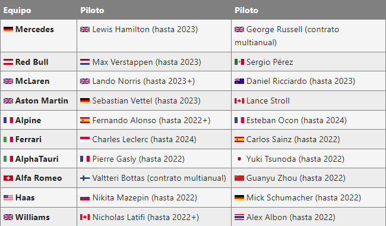

La temporada 2022 de Fórmula 1 es la 73.ª temporada del Campeonato Mundial de Fórmula 1 de la historia. Es organizada por la Federación Internacional del Automóvil (FIA).
Cambios de Grandes Premios
Se incorporó al calendario el Gran Premio de Miami en el Autódromo Internacional de Miami, ubicado en el estacionamiento del Hard Rock Stadium.
Se adelantó la fecha del Gran Premio de Arabia Saudita que pasó de ser la penúltima fecha del calendario 2021 a ser la segunda fecha de este calendario.
Los Grandes Premios de Australia, Canadá, Japón y Singapur, que se cancelaron en 2020 y 2021, vuelven de nuevo al calendario.
Los Grandes Premios de Catar, Estiria, Portugal y Turquía, que entraron como sustitutos en 2021, se quedan fuera del calendario. No obstante, en 2023, volverá el Gran Premio de Catar.
Debido a las actuales condiciones de la pandemia por COVID-19, el Gran Premio de China tampoco se disputará en 2022. Volverá en 2023.
Los Grandes Premios de Emilia-Romaña, Austria y São Paulo se correrán bajo el formato sprint.
Debido al conflicto bélico entre Rusia y Ucrania, la FIA decidió cancelar el Gran Premio de Rusia a disputarse el 25 de septiembre y todas las ediciones futuras de este Gran Premio.
Cambios de pilotos
Guanyu Zhou hara su debut absoluto en la Fórmula 1.
Al finalizar la temporada 2021, Kimi Räikkönen se retiró de la F1 tras estar 19 temporadas. Su lugar en la escudería Alfa Romeo es ocupado por Valtteri Bottas, quien dejó Mercedes después de cinco temporadas.
George Russell, proveniente de Williams, fichó por Mercedes para ocupar el asiento que dejó libre Valtteri Bottas.
Alexander Albon regresó a la categoría, tras una temporada fuera, para ocupar el asiento que dejó vacante George Russell en Williams.
Guanyu Zhou es el único piloto titular que debuta en la categoría. El piloto chino ocupa el lugar de Antonio Giovinazzi en el equipo Alfa Romeo.
Luego de los acontecimientos bélicos entre Rusia y Ucrania, el equipo Haas tomó la decisión de rescindir el contrato de su principal sponsor y conllevó a dejar sin asiento al piloto ruso Nikita Mazepin.
